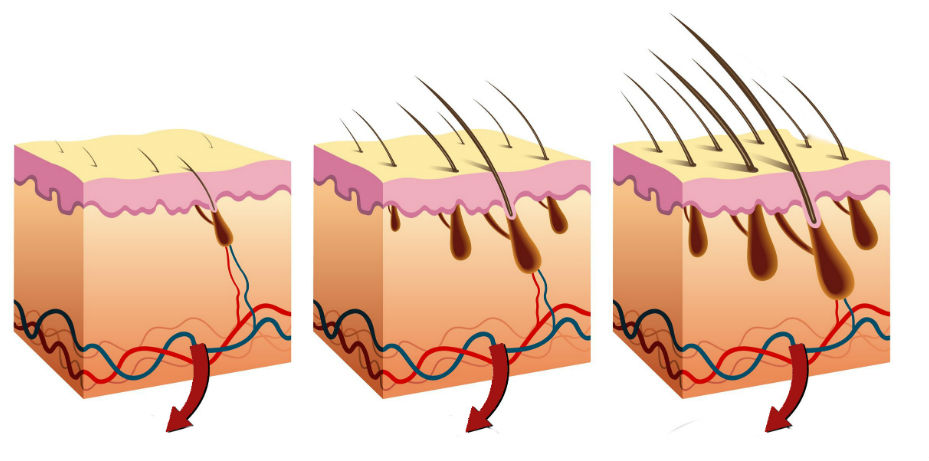

URGENTE: O tratamento Harvard previne totalmente a perda de cabelo e quadruplica a taxa de regeneração capilar em cinco semanas - o resultado foi atestado por 61,334 pacientes
Data de Publicação 27.11.2019, 12:47 • Última Atualização a 27.11.2019, 13:26
Alexandre Eduardo parou a queda de cabelo e tornou o cabelo mais denso em 38 dias
Este método científico prova que bastam 24 horas para prevenir a alopecia (perda capilar), quadruplicar a força do folículo piloso e desencadear o processo intensivo de regeneração capilar. Os resultados dos ensaios clínicos provam-no – funciona até com quem sofre de alopecia genética (perda de cabelo). A sua eficácia é tão clara que os pacientes que o utilizam registam um aumento capilar de 73%.
Milhares de pacientes que já tinham perdido qualquer esperança de recuperação capilar, testemunharam com imensa surpresa o nascimento de novos cachos de cabelos, saudáveis e luminosos. Muitos, pela primeira vez em 15 anos, conseguiram usar um produto sem qualquer receio, e alguns definiram os resultados como "um milagre e um sonho tornado realidade".
Tudo isto devido à nova descoberta dos geneticistas de Harvard, os quais desenvolveram o método científico de nanoestimulação para o crescimento capilar. Baseia-se numa descoberta laboratorial inovadora, que permite tornar o cabelo 64% -86% mais denso em apenas cinco semanas e isto sem quaisquer dietas adicionais, tratamentos cosméticos dispendiosas ou ações invasivas. A análise laboratorial e dos e clínicos confirmou que o método dos geneticistas americanos funciona em quatro principais áreas:
- inibe o processo de queda capilar num período de 5 dias após a primeira aplicação
- aumenta 4 vezes os folículos pilosos e alimenta as células capilares em apenas algumas horas
- promove automaticamente a regeneração capilar após uma semana de utilização
- mantém os resultados, assegurando o crescimento ininterrupto durante e após o tratamento
Por que razão esta técnica é superior a todos os outros métodos que permitem tratar a perda capilar?
De acordo com o professor Terry Marlow, criador do método científico:
"O método de nanoestimulação capilar é um conceito totalmente inovador para o combate à perda de cabelo. Esqueça as intervenções cosméticas onerosas, os sacrifícios, a falta de resultados e a desilusão cada vez maior. Com esta nova abordagem, terá novamente cabelos saudáveis e densos". Irá interromper a perda capilar e acelerar a regeneração do cabelo 4 vezes mais em 5 semanas.
Isto é possível ao alimentar o corpo uma mistura especial e patenteada composta por substâncias capazes de nutrir células capilares e inibir a contração dos folículos pilosos. Assim, os mecanismos responsáveis pela perda capilar são absorvidos totalmente de forma 421% mais eficaz. O próprio corpo começa a produzir cabelos saudáveis, dando-lhe a possibilidade de secá-lo novamente com uma toalha, pintá-lo e fazer um rabo de cavalo. Sem medo da queda, de quebrar ou enfraquecer o cabelo.
Método de nanoestimulação...
- Um crescimento capilar 4 vezes mais rápido em 5 semanas
- assegura o desenvolvimento de novos fios de cabelo 93% mais fortes
- melhora a resistência do cabelo ao stress e às toxinas em 84.7%
E tudo de forma simples e segura. Recorrendo à capacidade física do corpo para regenerar e reconstruir as células, as quais permanecem dormentes devido ao stresse, toxinas, num processo contínuo ao longo dos anos. Até ao momento, rasteámos 61,334 pacientes e registámos os resultados do tratamento, sendo que a conclusão é irrefutável – é o método mais eficaz e seguro até agora desenvolvido para combater a perda capilar e estimular a sua regeneração.
Como é que consegue interromper a perda capilar e acelerar a regeneração 4 vezes mais sem arriscar um cêntimo?
No mundo da medicina, trata-se de uma descoberta conhecida como crescimento capilar nanodinâmico, o qual é conhecido há já alguns meses, mas os investigadores esperaram pelo final dos testes para anunciá-lo publicamente. Durante três meses, analisaram mais de 60,000 pacientes dos EUA e Canadá. Com base nos resultados obtidos, foi possível verificar que o método na forma do óleo ativo é inofensivo para a saúde. Assim, tomou-se a decisão de torná-lo disponível com o nome VitaHair Max - o primeiro tratamento mundial para a queda capilar, que garante uma regeneração 4 vezes mais rápida e potente, tudo com o método de nanoestimulação capilar.
O método do Professor Marlow funciona em
três diferentes fases:
1. Interrupção da perda capilar
2. Regeneração e nutrição das células capilares
3. Estimulação do corpo para dar início à produção de cabelos saudáveis e fortes
O VitaHair Max é uma combinação única de ingredientes ativos e estimulantes. São capazes de regenerar células danificadas, impedir o encolhimento dos folículos pilosos e estimular o corpo para o desenvolvimento do cabelo. Após cinco semanas de utilização, a perda capilar será totalmente interrompida, permitindo ajudar na regeneração dos folículos pilosos, fortalecer as raízes e tornar o cabelo mais denso em cerca de 73%.
O VitaHair Max é uma terapia científica, disponível com uma garantia de satisfação em três vertentes: autenticidade, qualidade e satisfação. Se, após usar o VitaHair Max, o seu cabelo não estiver 73% mais denso em 5 semanas entre em contato com o Professor Marlow! A equipa dele fará de tudo para responder às suas reclamações. Trata-se de uma garantia pessoal dada pelo Professor Marlow, confirmada pelo fabricante do produto. Como tal, não estará a arriscar nada.
Na Portugal, a fórmula VitaHair Max apenas pode ser obtida se participar na plataforma de descontos. Se quiser ter novamente um cabelo saudável, forte e denso, só precisa de clicar no link abaixo. Atualmente, o VitaHair Max está disponível com um desconto de 50%. Mas precisa de ser rápido, pois o número de embalagens é limitado.
Clique aqui para obter o tratamento VitaHair Max com desconto
Comentários
MagdaMSão ótimas notícias para mim. O meu cabelo tem tido imensos problemas, e há muito tempo que tenho vindo a procurar um produto capaz de me dar esperança. Gostaria de voltar a ter um cabelo bonito e comprido, como nos tempos de juventude. Sinto imensa falta disso!
Resposta
PaulaIrei experimentar este produto com todo o gosto. Já tinha ouvido falar destas investigações, mas, na primeira vez que tomei conhecimento, ainda estavam em testes. E, claro, acabamos sempre por achar que temos de esperar vários anos, e afinal - que surpresa agradável. Mal posso esperar para começar a usá-lo. Tenho expetativas enormes.
Resposta
NelsonPara mim é uma revelação, admito-o. Um colega meu já o tinha usado e foi através dele que ouvi falar do produto. Para ser sincero, não acreditei nele. Tive as minhas suspeitas, achei que ele andava a usar uma peruca! Ele jurou a pés juntos que era verdade, quando voltou à fábrica após as férias. Recuperou o cabelo, sendo que antes estava quase totalmente careca. Eu disse-lhe que ele tinha posto um gato na cabeça! Hahaha e com essas conversas chegámos ao ponto principal. Ele aconselhou-me a usar o VitaHair max. Nunca tive muito cabelo, mas agora, depois de alguns dias de utilização, está a crescer à frente! Fez-me sorrir - um homem há tantos anos careca e agora, subitamente, o meu cabelo começou a crescer! É uma sensação estranha!
Resposta
Mariaah, isto é-me tão útil. Na minha juventude, andava sempre a pintar o cabelo, era moda. Fui loira, depois ligeiramente platina, ruiva. Fazia isso regularmente. Não sei quando é que começou a cair devido aos químicos. Queimei completamente o cabelo. Literalmente. Agora tenho asas em vez de cabelo. Não sei o que fazer para voltar ao que era. Espero que este método ajude.
Resposta
MichaelÉ aproveitar enquanto existe. Vivo no estrangeiro, onde estas coisas aparecem mais cedo. Em duas semanas, a novidade surgiu – a sua reputação está a espalhar-se rapidamente. Tive de comprá-lo aqui pois não consigo encontrá-lo noutro lugar. E vi como as pessoas mudam depois de usar a loção. Inacreditável.
Resposta
CristianoJá o usei. Funciona. Mas só receio uma coisa. É um produto tão poderoso, e acreditem no que digo - eficaz, de tal forma que os ladrões, assassinos e pervertidos vão usá-lo! E um homem desses vai acabar por invadir um banco e depois já sabe. Vai esconder-se durante por um mês, a polícia vai procurá-lo e no fim terá um aspeto totalmente diferente! E depois?!
Resposta
LuisCristiano, será que podes acalmar-te em vez de usares o vita hair max? O que é que estás para aí a dizer, pá? É claro que este tratamento funciona e promove o crescimento capilar, mas não exageremos... e existem impressões digitais, como decerto saberás. Respira fundo e usa produto com mais cuidado para não te ir para os olhos.
Resposta
VictorMas agora deste-me esperança. Mal consigo esperar pela minha loção. A sério, tenho a sensação de que desta vez vai funcionar. Estou mesmo entusiasmado.
Resposta
MiguelÉ algo interessante, muito interessante. Lembro-me da minha avó esfregar o cabelo com mel, para que não caísse e ficasse saudável, denso e brilhante. Mas o mel que temos hoje em dia já não é o mesmo. No passado, a alimentação era melhor, mais higiénica. Hoje em dia, o stress constante, os produtos químicos, os fumos... não conseguimos descansar nada. E essas coisas refletem-se no cabelo também, imediatamente. Não há nada que responda a alterações no ambiente como o cabelo. Como tal, não hesitei em comprar este produto, porque vejo nele uma boa combinação de ingredientes.
Resposta
AntónioAcho que isto até era capaz de ganhar Prémio Nobel. Mas nunca acontecerá. Os prémios só são atribuídos a coisas não tão importantes assim. Coisas que não contribuem em nada para as nossas vidas. Estas pessoas juntaram-se e trabalharam em algo dedicado à saúde humana, que não é uma arma, não é utilizada para matar! E não fizeram algo para o cancro ou uma coisa igualmente complexa, mas sim para problemas quotidianos, como obesidade ou perda capilar! São estes os problemas das pessoas!!!!
Resposta
JúliaQuando me olho no espelho, posso dizer que a minha vida deu uma volta de cento e oitenta graus. De forma abruta. Comecei a usar o VitaHair Max há três semanas. Não o comprei no país, mas sim no estrangeiro. Também na internet, já que é mais barato. E acho que é a única forma possível de comprá-lo. Seja como for, tinha uma falha enorme no topo da minha cabeça. E isso não combina com uma mulher, especialmente com cabelo comprido, até o meu marido fez referência a isso. Andava muito ansiosa. Não consegui dormir durante vários dias e a situação só piorou. Já desesperada, decidi experimentar o VitaHair Max. Não tinha escolha, simplesmente não havia nada para mim. E assim, dia após dia, cheguei ao ponto em que me encontro hoje – aplico o produto com a ajuda de um pequeno espelho, vejo o aspeto, pois no espelho maior consigo ver o reflexo do pequeno. Não sei exatamente a percentagem de crescimento do meu cabelo, mas é bastante na opinião muito.
Resposta
ÁlvaroAndei 7 anos a lutar pelo meu cabelo! Sete anos e disse a mim mesmo que não iria desistir. E foi o que fiz. Experimentei coisas diferentes, fiz experiências na minha cabeça que deixariam qualquer pessoa boquiaberta... a situação ficou ainda pior. Pensei que era simplesmente impossível! Mas eventualmente apostei no Vitahair Max. E foi aí que ganhei. Venci esta luta!
Resposta
FranciscoCustou-me a admitir a minha calvície e a ir trabalhar sem colocar um chapéu na cabeça. Mas noto agora que existe uma oportunidade para conseguir uma mudança significativa. Estou muito feliz pelo fato de alguns destes cientistas estarem a trabalhar para o bem-estar das pessoas comuns, para que estas tenham uma vida mais confortável, pois é disso que se trata.
Resposta
JoãoNão vou escrever muito, pois não é meu estilo, mas, se houver alguém a questionar-se, recomendo definitivamente este produto. O cabelo não necessita de qualquer cuidado especial, cresce sozinho!
Resposta
Helenafunciona claramente com o meu marido, eu ainda não preciso, mas um dia quem sabe...
Resposta
JoséBom, vou dizer isto: não tenho nada a perder, grande parte do cabelo já caiu... então basicamente vou apostar nele!
Resposta
LadyBlackVou experimentá-lo agora, não queria andar a pulverizar o cabelo, mas com este produto não tenho dúvidas de que vou ao cabeleireiro quando terminar o tratamento
Resposta
EduardoTambém aconselho a experimentarem como uma aposta. Em cinco semanas, o meu cabelo está definitivamente mais forte. Funciona como um relógio suíço. E perdi a aposta.
Resposta
More_hairSim, gosto!
Resposta
Mostrar mais